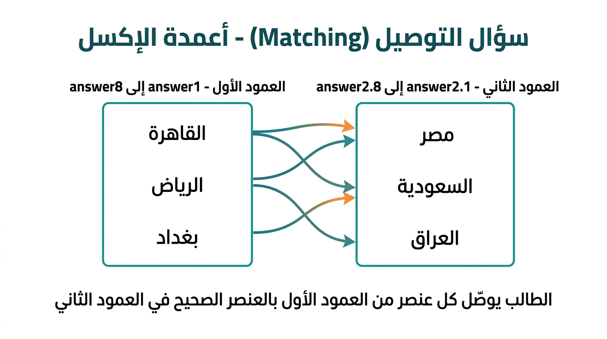

أمثلة عملية وتوضيح للحقول — خاصة أسئلة التوصيل (Matching)
| العمود | اسم الحقل | الوصف |
|---|---|---|
| A | subject | رقم المادة (معرّف) |
| B | unit | رقم الوحدة |
| C | lesson | رقم الدرس |
| D | type | MCQ أو TF أو SHN أو Matching |
| E | code | كود المعيار (اختياري) |
| F | question | نص السؤال |
| G | corAnswer | الإجابة الصحيحة |
| H | reasoning | تعليل الإجابة |
| I | reasoningIsRequired | 1 = مطلوب تعليل، 0 = لا |
| J–Q | answer1 … answer8 | خيارات (MCQ) أو العمود الأول (Matching) |
| R–Y | answer2.1 … answer2.8 | فقط في Matching: العمود الثاني للتوصيل |
صف واحد في الإكسل:
| A | B | C | D | E | F | G | H | I | J | K | L | M | N–Y |
|---|---|---|---|---|---|---|---|---|---|---|---|---|---|
| subject | unit | lesson | type | code | question | corAnswer | reasoning | reasoningIsRequired | answer1 | answer2 | answer3 | answer4 | فارغ |
| 1 | 2 | 5 | MCQ | SCI-G5 | ما العضو المسؤول عن ضخ الدم في الجسم؟ | 2 | القلب يضخ الدم عبر الأوعية الدموية. | 0 | المخ | القلب | الكبد | الرئتان | — |
في MCQ نترك answer2.1 … answer2.8 فارغة. الإجابة الصحيحة هنا "2" = الخيار الثاني (القلب).
الفكرة: الطالب يوصّل كل عنصر في العمود الأول بالعنصر المناسب في العمود الثاني.
كيف تكتبها في الإكسل؟
| … | answer1 | answer2 | answer3 | answer2.1 | answer2.2 | answer2.3 |
|---|---|---|---|---|---|---|
| … | القاهرة | الرياض | بغداد | مصر | السعودية | العراق |
صورة توضيحية:

حقل corAnswer يحدد التوصيلة الصحيحة (مثل: 1:1,2:2,3:3 أو حسب شكل النظام). إذن answer2.1 … answer2.8 هي نصوص العمود الثاني فقط، وليست «أي إجابة من عدة إجابات تقبل».